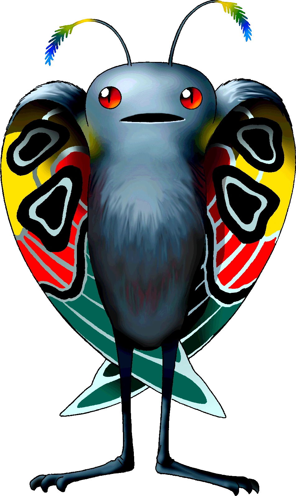

Mothman
Arcano: La Luna (The Moon) | Elemento: Electricidad (Zio)

Origen y Mitología
A diferencia de Jack Frost y Jack-o'-Lantern, Mothman no proviene de una leyenda antigua, sino de un famoso caso de criptozoología de la vida real. Se le describe como una criatura humanoide con grandes alas, sin cabeza, con los ojos rojos brillantes incrustados en el pecho. Fue avistado por primera vez en Point Pleasant, Virginia Occidental, entre 1966 y 1967.
El folclore estadounidense lo considera un "presagio" de desastres. Se dice que su aparición es un anuncio de tragedias inminentes, como el famoso colapso del puente Silver Bridge. En la saga Persona, conserva su aura de misterio y suele estar asociado con la noche y las habilidades mentales.
"¡Zzzzt! ¡La noche es larga y la oscuridad es mi aliada!"
Estadísticas de Combate
Mothman es un Persona ágil y mágico, ideal para atacar los puntos débiles de los enemigos y sembrar el caos con estados alterados:
| Atributo | Valor | Descripción |
|---|---|---|
| Nivel | 14 | Nivel inicial de invocación. |
| Fuerza | 10 | Ataque físico básico. |
| Magia | 13 | Poder de los hechizos eléctricos. |
| Resistencia | 8 | Defensa contra ataques físicos. |
| Agilidad | 12 | Velocidad y evasión. |
| Suerte | 9 | Probabilidad de golpes críticos. |
Habilidades y Afinidades
Sus ataques se centran en la electricidad y en desestabilizar al enemigo. Estas son sus habilidades:
- Zio: Ataque ligero de electricidad a un enemigo.
- Mazio: Ataque ligero de electricidad a todos los enemigos.
- Tentarafoo: Alta probabilidad de confundir a todos los enemigos.
- Evil Touch: Ataque de maldición que infunde miedo a un enemigo.
Debilidades y Resistencias
Como criatura voladora, tiene una clara desventaja contra ciertos elementos:
- Resistente a: Electricidad.
- Débil contra: Viento (Garu) y ataques de disparo (Gun).
¿Quieres saber más?
Si te interesa el misterio real detrás de esta criatura, puedes investigar más sobre los avistamientos en: La leyenda del Hombre Polilla en Wikipedia.